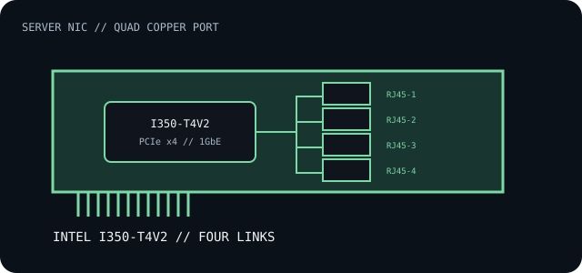

[ INDIVIDUAL COMPONENT // EXPANSION CARDS ]
Intel Ethernet Server Adapter I350-T4V2
Four-port copper Gigabit Ethernet adapter for server and workstation PCI Express hosts.

IDENTIFICATION: Intel product SKU 84805 identifies the I350-T4V2. Check printed SKU, revision, bracket and PCI identifiers; don't interchange driver or firmware assumptions among I350-family boards.
Specifications and compatibility
| Exact model / SKU | Intel Ethernet Server Adapter I350-T4V2, SKU 84805. |
|---|---|
| Controller | Intel Ethernet Controller I350 series. |
| Bus / host interface | PCI Express 2.1, 5.0 GT/s; x4 host link. A compatible x4-electrical PCIe slot is required. |
| Ethernet standards / rates | Four independent 10BASE-T, 100BASE-TX or 1000BASE-T links over copper, within the IEEE 802.3 Ethernet family. |
| Ports / connectors | Four RJ-45 copper ports. Intel lists Cat 5 cable up to 100 m for the 1GbE link; link negotiation depends on cabling and the peer. |
| OS / driver compatibility | Use Intel's Ethernet driver release notes and the target server OS's supported driver. Current and legacy releases differ; verify the I350 package before installing. |
| Revision / host caveat | Check board revision, bracket height and host lane wiring. A physically long PCIe slot may be wired for fewer lanes; confirm x4 link availability and airflow around this multi-port card. |
Installation and archival notes
- Inventory all four PCI functions/MAC addresses and record link speed, driver and firmware state.
- Check airflow, slot sharing, electrical lane count, BIOS enumeration and chosen bracket in the server manual.
- Do not treat identical I350 silicon as proof that OEM and Intel adapter revisions share the same NVM image or support policy.
Manufacturer specifications and documentation
- Intel — I350-T4V2 specificationsSKU-specific port configuration, link rates and PCIe interface.
- Intel — Ethernet Server Adapter I350 product briefI350 adapter family features and host interface context.
- Intel — Ethernet Adapter Complete Driver PackCurrent driver packages and release-specific OS support.